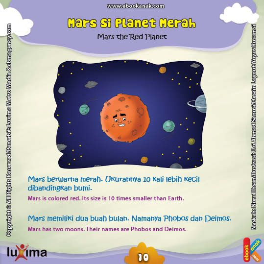

Tata Surya
Tata Surya adalah kumpulan benda langit yang terdiri atas sebuah bintang yang disebut Matahari dan semua objek yang terikat oleh
gaya gravitasinya. Objek-objek tersebut termasuk delapan buah planet yang sudah diketahui dengan orbit berbentuk elips, lima planet kerdil/katai,
173 satelit alami yang telah diidentifikasi, dan jutaan benda langit (meteor, asteroid, komet) lainnya.
Nama-Nama Planet :
Merkurius adalah planet
terkecil di Tata Surya sekaligus yang terdekat dari Matahari. Periode revolusi planet ini merupakan yang terpendek dari semua
planet di Tata Surya, yakni 87,79 hari. Seperti halnya Venus, Merkurius merupakan planet inferior yang letak orbitnya berada di
sebelah dalam orbit Bumi, dan ketika diamati dari Bumi, jarak sudutnya dari Matahari tidak pernah melebihi 28°. Karena jarak yang
dekat dengan Matahari, planet ini hanya dapat dilihat di dekat ufuk barat setelah matahari terbenam atau ufuk timur sebelum
matahari terbit, atau biasanya ketika aram. Merkurius akan tampak seperti bintang yang terang jika diamati pada waktu tersebut,
tetapi sering kali jauh lebih sulit untuk diamati daripada Venus. Jika diamati dari teleskop, Merkurius akan menampilkan
serangkaian fase yang mirip dengan fase Venus dan Bulan, ketika bergerak di orbit bagian dalamnya yang relatif terhadap Bumi
dan terjadi berulang dalam satu siklus sinodiknya, yakni sekitar 116 hari.
Venus adalah planet terdekat kedua dari Matahari setelah Merkurius. Planet ini
mengorbit Matahari selama 224,7 hari Bumi.Venus tidak memiliki satelit alami dan dinamai dari dewi cinta dan kecantikan dalam
mitologi Romawi. Setelah Bulan, planet ini merupakan objek alami tercerah di langit malam, dengan magnitudo tampak sebesar −4,6
yang cukup cerah untuk menghasilkan bayangan.Venus merupakan planet inferior dengan sudut elongasi yang mencapai 47,8°.
Kecerahan maksimal planet ini dapat dilihat segera sebelum matahari terbit atau setelah matahari terbenam, sehingga disebut Bintang
Fajar atau Bintang Senja.
Bumi adalah planet ketiga dari Matahari yang merupakan planet terpadat dan
terbesar kelima dari delapan planet dalam Tata Surya. Bumi juga merupakan planet terbesar dari empat planet kebumian di Tata Surya.
Bumi terkadang disebut dengan dunia atau Planet Biru.Bumi terbentuk sekitar 4,54 miliar tahun yang lalu, dan kehidupan sudah muncul
di permukaannya paling tidak sekitar 3,5 miliar tahun yang lalu.Biosfer Bumi kemudian secara perlahan mengubah atmosfer dan
kondisi fisik dasar lainnya, yang memungkinkan terjadinya perkembangbiakan organisme serta pembentukan lapisan ozon, yang bersama
medan magnet Bumi menghalangi radiasi surya berbahaya dan mengizinkan makhluk hidup mikroskopis untuk berkembang biak dengan aman
di daratan. Sifat fisik, sejarah geologi, dan orbit Bumi memungkinkan kehidupan untuk bisa terus bertahan.

Mars adalah planet terdekat keempat dari Matahari. Namanya diambil dari dewa perang Romawi, Mars. Planet ini sering dijuluki
sebagai "planet merah" karena tampak dari jauh berwarna kemerah-kemerahan. Ini disebabkan oleh keberadaan besi(III) oksida
di permukaan planet Mars.Mars adalah planet bebatuan dengan atmosfer yang tipis. Di permukaan Mars terdapat kawah, gunung berapi,
lembah, gurun, dan tudung es. Periode rotasi dan siklus musim Mars mirip dengan Bumi. Di Mars berdiri Olympus Mons, gunung tertinggi
di Tata Surya, dan Valles Marineris, lembah terbesar di Tata Surya. Selain itu, di belahan utara terdapat cekungan Borealis yang meliputi
40% permukaan Mars.
Jupiter atau Yupiter adalah
planet terdekat kelima dari Matahari setelah Merkurius, Venus, Bumi, dan Mars. Planet ini juga merupakan planet terbesar di
Tata Surya. Jupiter merupakan raksasa gas dengan massa seperseribu massa Matahari dan dua setengah kali jumlah massa semua
planet lain di Tata Surya. Planet ini dan raksasa gas lain di Tata Surya (yaitu Saturnus, Uranus, dan Neptunus) kadang-kadang
disebut planet Jovian atau planet luar. Jupiter telah dikenal oleh para astronom sejak zaman kuno, dan dikaitkan dengan
mitologi dan kepercayaan religius banyak peradaban. Bangsa Romawi menamai planet ini dari dewa Jupiter dalam mitologi Romawi.
Saat diamati dari Bumi, magnitudo tampak Jupiter dapat mencapai −2,94, yang cukup terang untuk menghasilkan bayangan,
dan juga menjadikannya objek tercerah ketiga di langit malam setelah Bulan dan Venus, walaupun Mars dapat menyaingi kecerahan
Jupiter pada saat tertentu.
Saturnus adalah planet keenam
dari Matahari dan merupakan planet terbesar kedua di Tata Surya setelah Jupiter. Saturnus juga merupakan sebuah raksasa gas yang
memiliki radius rata-rata sekitar 9 kali radius rata-rata Bumi. Massa jenis rata-rata Saturnus hanya 1/8 massa jenis
rata-rata Bumi, tetapi dengan volume yang lebih besar dari Bumi, massa Saturnus tercatat 95 kali massa Bumi. Saturnus dinamai
menurut dewa kesejahteraan dan agribudaya dalam mitologi Yunani; simbol astronominya (♄) melambangkan sabit yang digunakan oleh
dewa tersebut.
Uranus
(berasal dari nama Latin Ūranus untuk nama dewa Yunani Οὐρανός) adalah planet ketujuh dari Matahari. Uranus merupakan
planet yang memiliki jari-jari terbesar ketiga sekaligus massa terbesar keempat di Tata Surya. Uranus juga merupakan
satu-satunya planet yang namanya berasal dari tokoh dalam mitologi Yunani, dari versi Latinisasi nama dewa langit Yunani
Ouranos. Komposisi Uranus serupa dengan Neptunus, dan keduanya mempunyai komposisi kimiawi yang berbeda dari raksasa gas
yang lebih besar, Jupiter dan Saturnus. Karenanya, para astronom sering menempatkan Uranus dan Neptunus dalam kategori "raksasa es"
untuk membedakan keduanya dari raksasa gas. Atmosfer Uranus serupa dengan Jupiter dan Saturnus karena kandungan utamanya adalah
hidrogen dan helium, tetapi mengandung lebih banyak unsur "es" seperti air, amonia dan metana, bersama dengan sisa hidrokarbon.
Atmosfer Uranus merupakan atmosfer planet terdingin di Tata Surya, dengan suhu terendah mencapai 49 K (−224 °C; −371 °F).
Atmosfer Uranus mempunyai struktur awan berlapis-lapis dan kompleks, serta diperkirakan lapisan awan terendahnya terdiri atas
air dan lapisan awan tertingginya terdiri atas metana. Bagian dalam Uranus sebagian besar terdiri atas es dan bebatuan.
Neptunus merupakan planet terjauh
(kedelapan) jika ditinjau dari Matahari. Planet ini dinamai dari dewa lautan Romawi. Neptunus merupakan planet terbesar keempat
berdasarkan diameter (49.530 km) dan terbesar ketiga berdasarkan massa. Massa Neptunus tercatat 17 kali lebih besar daripada Bumi,
dan sedikit lebih kecil daripada Uranus. Neptunus mengorbit Matahari pada jarak 30,1 sa atau sekitar 4.450 juta km. Periode
rotasi planet ini adalah 16,1 jam, sedangkan periode revolusinya adalah 164,8 tahun. Simbol astronomisnya adalah ♆, yang merupakan
trisula dewa Neptunus.
Pluto
(nama planet minor: 134340 Pluto) adalah planet katai di sabuk Kuiper dan objek trans-Neptunus pertama yang ditemukan.
Pluto merupakan planet katai terbesar dan bermassa terbesar kedua di Tata Surya dan benda terbesar kesembilan dan bermassa
terbesar kesepuluh yang mengorbit Matahari secara langsung. Pluto merupakan objek trans-Neptunus dengan volume terbesar
dan massa yang sedikit lebih kecil daripada Eris, planet katai di piringan tersebar. Layaknya objek lain di sabuk Kuiper,
Pluto terdiri dari batu dan es dan relatif kecil—kurang lebih seperenam massa Bulan dan sepertiga volume Bulan. Pluto
memiliki orbit eksentris dan miring dengan jarak 30 sampai 49 satuan astronomi (4,4–7,3 miliar km) dari Matahari. Ini berarti
ada saatnya Pluto lebih dekat ke Matahari daripada Neptunus; resonansi orbit yang stabil dengan Neptunus membuat kedua planet
ini tidak bertabrakan. Pada tahun 2014, Pluto berjarak 32,6 sa dari Matahari. Cahaya Matahari butuh waktu 5,5 jam untuk mencapai
Pluto pada jarak rata-ratanya (39,4 sa).
Serba-Serbi Tata Surya :
Matahari atau Surya adalah bintang di pusat tata surya. Bentuknya nyaris
bulat dan terdiri dari plasma panas bercampur medan magnet.Diameternya sekitar 1.392.684 km,kira-kira 109 kali diameter Bumi,
dan massanya (sekitar 2×1030 kilogram, 330.000 kali massa Bumi) mewakili kurang lebih 99,86 % massa total tata surya. Matahari
merupakan benda langit terbesar di galaksi Bima Sakti yang besarnya bahkan 10 kali planet terbesar tata surya, Jupiter.
Meteor adalah penampakan jalur
jatuhnya meteoroid ke atmosfer bumi, lazim disebut sebagai bulan jatuh. Penampakan tersebut disebabkan oleh panas yang dihasilkan
oleh tekanan rpm (bukan oleh gesekan, sebagaimana anggapan umum sebelum ini) pada saat meteoroid memasuki atmosfer. Meteor yang
sangat terang, lebih terang daripada penampakan Planet Mars, dapat disebut sebagai bolide. Jika suatu meteoroid tidak habis terbakar
dalam perjalanannya di atmosfer dan mencapai permukaan bumi, benda yang dihasilkan disebut meteorit. Meteor yang menabrak bumi atau
objek lain dapat membentuk sawah tabrakan.
Atmosfer bumi adalah lapisan gas
yang melingkupi bumi, dari permukaannya sampai jauh di luar angkasa. Ketinggian atmosfer antara ketinggian 0 km di atas permukaan
tanah hingga pada ketinggian sekitar 560 km dari atas permukaan bumi. Susunan atmosfer terdiri dari lapisan yang dibedakan
berdasarkan komposisi, reaksi kimia, ionisasi, dan tingkatan suhunya. Berdasarkan suhunya, atmosfer tersusun dari lima lapisan
dengan suhu yang berbeda-beda yaitu troposfer, stratosfer, mesosfer, termosfer, dan eksosfer. Lapisan atmosfer paling atas sangat
tipis dan renggang sehingga partikel yang bergerak bebas dapat lepas dari tarikan gravitasi bumi dan tertiup ke ruang angkasa oleh
angin surya. Sebaliknya, kondisi lapisan atmosfer paling bawah sangat tebal dan terdiri dari gas, air, dan debu yang menyebabkan
terjadinya hujan serta perubahan musim dan cuaca. Lapisan troposfer dan stratosfer digunakan sebagai jalur transportasi bagi pesawat
terbang.
Asteroid, disebut juga planet minor
atau planetoid, adalah benda berukuran lebih kecil daripada planet, tetapi lebih besar daripada meteoroid, umumnya terdapat di bagian
dalam Tata Surya (lebih dalam dari orbit planet Neptunus). Asteroid berbeda dengan komet dari penampakan visualnya. Komet menampakkan
koma ("ekor") sementara asteroid tidak. Istilah ini secara historis ditujukan untuk semua objek astronomis yang mengelilingi matahari
dan setelah diobservasi tidak memiliki karakteristik komet aktif.
Bintang merupakan benda langit
yang memancarkan cahaya yang disebabkan oleh reaksi fusi nuklir yang menghasilkan energi yang terjadi intinya.Perlu diperhatikan
bahwa 'bintang semu' bukanlah bintang, tetapi planet yang memantulkan cahaya dari bintang lain dan terlihat bercahaya di langit
seperti sebuah bintang.
Menurut ilmu astronomi, definisi bintang adalah:
Semua benda masif (bermassa antara 0,08 hingga 200 massa matahari) yang sedang dan pernah melangsungkan pembangkitan energi melalui reaksi fusi nuklir.
Oleh sebab itu bintang katai putih dan bintang neutron yang sudah tidak menghasilkan energi tetap disebut sebagai bintang. Bintang terdekat dengan Bumi adalah Matahari pada jarak sekitar 149,680,000 kilometer, diikuti oleh Proxima Centauri dalam rasi bintang Sentaurus berjarak sekitar empat tahun cahaya.
Galaksi adalah sebuah sistem masif
yang terikat gaya gravitasi yang terdiri atas bintang (dengan segala bentuk manifestasinya, antara lain bintang neutron dan lubang
hitam), gas dan debu medium antarbintang, dan materi gelap–komponen yang penting namun belum begitu dimengerti. Kata galaksi
berasal dari bahasa Yunani galaxias (γαλαξίας), yang berarti "seperti susu," yang merujuk pada galaksi Bima Sakti
(bahasa Inggris: Milky Way).
Galaksi yang ada berkisar dari galaksi katai dengan hanya sepuluh juta (107) bintang hingga galaksi raksasa dengan seratus
triliun (1014) bintang,[4] yang semuanya mengorbit pada pusat massa galaksi masing-masing. Matahari adalah salah satu bintang
dalam galaksi Bima Sakti; tata surya termasuk bumi dan semua benda yang mengorbit Matahari.

Stasiun luar
angkasa atau stasiun orbit adalah struktur buatan didesain buat manusia untuk hidup di luar angkasa. Sebuah Stasiun Luar Angkasa
dibedakan dari wahana antariksa berawak lainnya karena ketiadaan propulsi utama atau fasilitas pendaratan; tetapi, kendaraan lain
digunakan sebagai kendaraan ke dan dari stasiun ini. Stasiun luar angkasa didesain untuk hidup di orbit jangka-menengah, untuk
periode mingguan, bulanan, atau bahkan tahunan.
Stasiun luar angkasa juga digunakan untuk mempelajari efek jangka panjang penerbangan luar angkasa terhadap tubuh manusia dan
juga untuk menyediakan platform untuk jumlah yang lebih banyak dan panjang untuk penelitian saintifik dari yang telah tersedia
di kendaraan luar angkasa lainnya. Sejak penerbangan nasib-buruk Soyuz 11 sampai Salyut 1, semua durasi penerbangan luar angkasa
berawak telah dicetak di atas stasiun luar angkasa. Rekor durasi 437,7 hari dipegang oleh Valeri Polyakov di atas Mir dari 1994
sampai 1995. Pada 2003, 3 astronaut telah menyelesaikan satu misi dengan lebih dari setahun, semua di atas Mir.